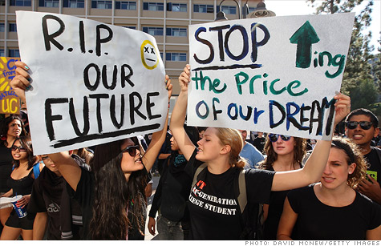

Tuition has risen dramatically in America primarily because of a simple imbalance between supply and demand, demand for a college education has simply outstripped supply. This problem has been further complicated and exasperated by the misappropriation of federal subsidies currently in place. I hope to convince you in this argument to support the full abolition of tuition at public universities within the United States.
The demand for a college education has increased primarily because the value of having a college degree has increased. According to the Federal Reserve Bank of New York, even after accounting for the price of tuition and opportunity costs, a bachelor's degree is worth approximately $300,000 to a student (Abel, Deitz). According to David Autor of the Massachusetts Institute of Technology Economics department, that figure may be closer to $500,000 (Autor). As high as these figures are, more students have likely heard the value of college quoted closer to $1,000,000, making that number more relevant as the perceived value of attending college (Fottrell). Naturally, this has caused the number of degree seekers to rise as students attempt to take capture that value.
Additionally, the value of a college education has been driven at least as much by the falling wages of those who do not hold a degree as it has been driven by rising wages for college graduates. According to the latest survey by the Pew Research Center and data from the U.S. Census Bureau, while wages for college graduates rose from $38,833 inflation-adjusted dollars in 1965 to $45,500 in 2012, the typical high school graduates earnings fell from $31,384 in 1965 to $28,000 in 2013 (The Ris.).
The strong correlation between income gap and a college education suggests that the best way of closing the gap would be to make college free for anyone who wants to go.
The earnings gab has more than doubled since 1965 and since 1979 high-school graduates have gone from making 77% of what college graduates made to only 62% of what the average college graduate makes today. We are facing an increasingly wide wage gap in the United States between the educational haves and have-nots. If we want our less fortunate citizens to have a chance at pulling themselves up and pursuing a better life for themselves and their families, then we must give them an opportunity to do so. The strong correlation between income gap and a college education suggests that the best way of closing the gap would be to make college free for anyone who wants to go.
Unfortunately, universities have been unable to meet the increasing demand for an education by increasing their enrollment. Instead they have raised tuition prices in a straightforward play to the market forces of supply and demand. The federal government has recognized the value of a college degree and encouraged citizens to pursue an education through the use of subsidized tuition since the passing of the GI bill. In order to allow more students to afford college, the federal government has subsidized loans and created or increased grant programs. Federal subsidization has risen from 48.2 billion dollars per year in 1975 to 81 billion dollars per year today (Campos).
Federal programs reduce the out of pocket cost of college for students and encourage more students to apply for a college education. The increased demand and newly available funds incentivize universities to raise their prices further, thus creating a cycle of rising costs and increasing student debt. Additionally, student loans are not like other forms of debt because they are not dischargeable in bankruptcy. Unlike other loans, mortgages for example, there is no way for student loan borrowers to default on their loans, they are stuck with them until they have been payed in nearly all circumstances, although there are some rarely granted exceptions. (11 USCA)
Debtors who wish to discharge their student loans in bankruptcy must show that repayment would cause them an undue hardship. However, undue hardship is an ambiguous term that is not currently defined by any relevant laws. In order to deal with this ambiguity courts have adopted a three part test called the “Brunner Test”. To be granted an exception a debtor must be unable to maintain a minimal standard of living, have made a good faith attempt to repay the loans, and lack any hope of repaying the loans for the foreseeable future. In practice, such exceptions are made for less than half of cases which go to court. Jason Iuliano of the Princeton Department of Politics found that only 39% of cases received even a partial discharge of their student debt (Iuliano).
One way of ending this cycle would be to cut all subsidization and make loans dischargeable in bankruptcy. Removing the artificial constraints that have been placed on the market could allow the market to eventually re-stabilize. Dischargeable loans are much riskier for lenders. If students are unable to get loans because of the amount of risk they present, fewer students will be able to enroll. Higher tuition will also discourage students from enrolling. These students would have to find new ways of entering the job force. Declining enrollment and an increase in alternatives would cause the price of tuition to stabilize at true market rates over time.
Unfortunately, in the near to medium term, this policy would cause a lot of turbulence in our economy. Furthermore, it would price out students from low-income households and students who wished to study subjects with low expected financial returns. Education is not entirely about getting a great job and we should not be making it harder for low income citizens to move out of poverty.
 Source: http://nyulocal.comThe solution I'm proposing is to shift the burden of education costs from students to taxpayers. This may not seem fair at first to the taxpayers who do not go to college, but there are at least two reasons why this is not a major issue. First, college graduates make more money and therefore they will pay more taxes over their lifetime and second, there are many government services we pay for as a whole which are only used by a few. Everything subsidized by the government can not benefit every tax payer equally, but we should promote the initiatives which improve the nation for all of us. As it stands, student debt is a burden on the economy and solutions to this crisis which limit social mobility would be detrimental.
“We got rid of tuition fees because we do not want higher education which depends on the wealth of the parents" -Gabrielle Heinen-Kjajic (Minister for science and culture in Lower Saxony)
Free, or at least very affordable, education is the norm across most of Europe, but I'd like to focus on Germany here as Germany is a country which has just recently fully abolished tuition after attempting to introduce it. The initiative introduced in Germany in 2006 to allow universities to charge college students for tuition was met with harsh criticism, which eventually led to the state-by-state repeal of tuition fees. Lower Saxony was the last state to officially abolish tuition for both domestic and international students in October of 2014 year (Buchanan).
The German university system works a bit differently than the system we have in the United States. The German system is a bit cheaper to run due to a few key philosophical and structural differences about what it means to be a university in Germany. In addition, the Germans pay fairly high federal income taxes at 42% for persons making between $50,000 and $250,000 per year (Personal). However, I don't think that these differences are so great that Germany can not be used as an example of what we can do here in the United States.
“Tuition fees are unjust[...]they discourage young people who do not have a traditional academic family background from taking up study. It is a core task of politics to ensure that young women and men can study with a high quality standard free of charge in Germany.” -Dorothee Stapelfeldt (Senator for science in Hamburg)
One of the main differences which make a German university cheaper to operate are the lack of amenities beyond what is needed to maintain an academic environment. The amenities we've become used to at American colleges do not exist at German institutions for the most part. German universities, for one, lack the classic college campus that we tend to associate with college here in the United States. German campuses tend to be dispersed among several buildings throughout a city and lack any real "campus" feel. The myriad clubs, events, sports facilities, and other amenities that have become common at universities in the United States are not present at the majority of German universities. Regardless of their merits, it saves money not to have these extras.
Another reason why German universities may be less expensive to operate than their counterparts in the United States to is a lack of the growing administrative bloat many universities in the United States have been experiencing. Paul F Campos, a law professor at the University of Colorado, Boulder wrote an article for the NY times in which he argues that the rising costs of college is at least partly due to increasing administrative costs. Campos wrote that "according to the Department of Education data, administrative positions at colleges and universities grew by 60 percent between 1993 and 2009". In the California State University system for example, according to statistics Campos gathered in his article, the number of administrators grew by 221% from 1975 to 2008. The number of tenure-tracked positions added in that same time grew by approximately one tenth the growth rate of the administration. (Campos)
Fortunately, the additional tax burden required to subsidize education in the United States would be small to nonexistent if subsidization is implemented correctly. In fact, federal subsidization of the full costs of higher education at public universities could be accomplished with no increase in net in tax revenue over time. As it stands today, the federal government currently spends more dollars across all financial aid programs than is charged at all public universities in the United States. We could effectively make tuition at all public universities free for less money than we are currently paying to partially subsidize college costs.
In 2013 the federal government spent close to 69 billion dollars across all financial aid programs according to the New America Foundation, and according to the National Center for Education Statistics the tuition charged at all public universities totaled to approximately 53 billion dollars. Therefore, the federal government could theoretically afford to cover 100% of tuition costs at public Universities today simply by reallocating the funds it currently spends on it's financial aid programs and it would still have 14 billion dollars left over. Taking this course of action would leave some students attending private schools with less funding, but competing with a free alternative would have the additional incentive of encouraging those private universities to lower their tuition costs as well.
Some critics of subsidization, such as Chris Edwards and Neil McCluskey of the CATO Institute, argue that subsidization leads to limitations on freedom of speech through the enforcement of regulations on course materials at universities (McCluskey, Edwards). However, The United States government is made up of multiple entities and persons with vary different viewpoints. To claim that the government has their hand in education in order to indoctrinate students with certain viewpoints is unlikely given that government itself does not often come to a consensus on what viewpoints are correct. Furthermore, the government is already in the business of subsidizing education costs. There is nothing stopping the United States government from attempting to regulate what materials are being taught at universities now. The claim that subsidization will lead to increased regulation is unfounded, it may happen regardless.
Outlawing tuition at public universities in the United States would have to be accompanied by actual laws regulating tuition charges for public university students as has been done successfully in Germany, otherwise the universities could decide to pocket the subsidies and increase tuition as they have with government subsidies in the past. What we need is a clean break from the viscous cycle of increasing subsidies, tuition rates, and student debt. Lowering tuition at public universities would in turn encourage private universities to charge less as well in order to stay competitive in a radically changed market. This would hopefully lead to a new cycle, a virtuous cycle of stabilizing, decreasing tuition and decreasing rates of student loan debt.
In fact, the United States has already taken its first step towards free higher education. President Obama announced in January a proposal that would make community college free for all students who maintain a 2.5 GPA and "maintain steady progress" towards a degree. The costs of tuition will be split between the federal and state governments. The federal government will pay around 75% of the cost of tuition while participating states will pay around 25% of tuition costs. The Obama administration estimates that this program will save 9 million students an average of $3,800 year if it is adopted by all states. (Zero)
This plan, if put into action, may prove to be the perfect litmus test for full tuition subsidization in the United States. If it works at our community colleges, if colleges are prevented from abusing the system, and if students are able to graduate debt free and engage in more meaningful ways with the economy, then the next logical step may be to expand the program to 4 year public universities. A tuition free system, once in place, will take off the ball and chain currently clasped to the ankles of our new grads and spur increased economic activity.
The student debt crisis has now gone past the point where it can be safely reined by market forces. The current system of subsidization has made the situation worse, but cutting subsidization off now would merely the cement the already developing division between the wealthy who can afford education and the poor who cannot. Student debt is a drag on the U.S. economy and is putting us at a disadvantage to countries like Germany where education is considered a civil right. The need for a radical change has become apparent and political entities such as the Obama Administration have begun to take action. If we do not want the movement towards a freer and more meritocratic America to die out before it has even been born, we must collectively support the move towards full subsidization and we must encourage our politicians to do the same. If we move now, free tuition at public universities can become the future of education in the United States.